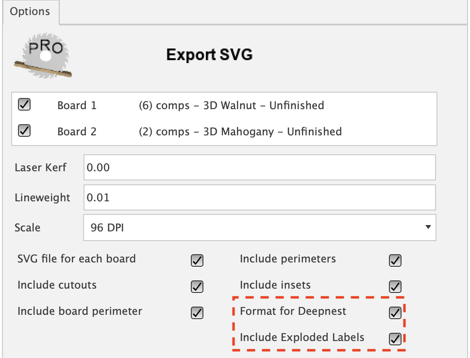
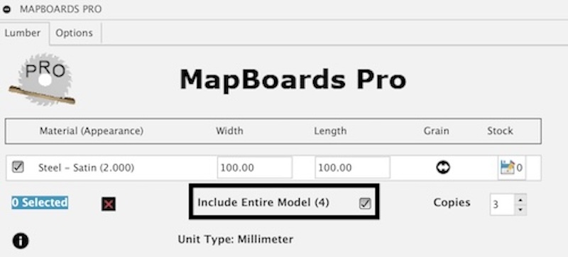

Options
Arrange from bottom up
When this option is selected the arrangement of components will start from the bottom of the board instead of the top placing components closest to the home position (0,0) on a CNC. This leave the unused waste material at the top of the board.

Arrange Type
- Matching Widths Horizontally
Component bodies are sorted by width and length in descending order. Bodies of the same width will then fill the board horizontally. This can be used for rip cutting when a board`s longest dimension is horizontal and cross cutting when the longest dimension is vertical.
- Matching Lengths Vertically
Component bodies are sorted by length and width in descending order. The board is then filled vertically top to bottom in columns from left to right with bodies of the same length. This can be used for cross cutting when a board`s longest dimension is horizontal and rip cutting when the longest dimension is vertical.
- Fill Boards Diagonally
Component bodies are sorted by length and width in descending order. The board is alternately filled horizontally and vertically starting in the top left corner of the boards. This should result with the most condensed layout. There is a random aspect to the fill pattern and is therefore nice to try when you are looking for another option.
Automatic Grain Alignment
Setting this option will automatically rotate parts 90 degrees, if needed, to align the grain with the targeted board’s grain direction which can be configured to be horizontal or vertical. This will only affect parts that have 3D appearances applied such as appearances found in the Wood (Solid) category.
Wood grain is often aligned along the longest edge length which matches MBP mapping. MBP will by default align the longest edge with the targeted board’s grain direction. The Texture Map Controls, available by right-click on a select part, can be used to rotate the visible grain to make it more aesthetically pleasing. Shown here is Texture Map Controls being used to rotate the grain 90 degrees on a cabinet side and the resulting map created for this side when this option is set. The side is vertically oriented but the grain is horizontal matching the targeted board’s grain which in this case was set to horizontal on the created map.
Note: The parts must be contained in a fusion component in order for grain alignment to work reliably.

—> Resulting Map —>

Can Rotate
When this option is selected a check will be made to see if a rotated component would be a better fit based on the arrangement type selected.
Arrangement Type |
Selection Process |
|---|---|
Matching Width Horizontally |
Select the next component which best matches the width of the last component placed either rotated or not. |
Matching Length Vertically |
Select the next component which best matches the length of the last component placed either rotated or not. |
Fill Boards Diagonally |
Select the next component which best matches the length of the last component placed either rotated or not as it alternately progresses horizontally and vertically. |
Component Spacing
Spacing is the distance between component bodies placed in the map. A spacing set to zero will place bodies edge to edge if shapes are rectangular in shape.

Colors
This option is available for DXF, SVG and Report output export types and will allows a color selection for the lines representing perimeter, cutouts, insets and labels profiles. Expanding Colors will show the following:

The SVG and Report exports have an additional option, Fill Faces. When selected the faces will be filled with their corresponding selected color. Use it to highlight features like insets, cutouts or top face (perimeter) or to create something fun.
Copies Option
Map multiple copies of the current selection or if the option Include Entire Model is selected it will map multiple copies of the entire model.
When set to one, the default, only one copy of each part will be mapped with the option to set the quantity for individually selected parts.

Cutlist
When set a csv file is created containing the following:
A table with all placed components that includes Board No, Quantity, Component name, Material Type, Width, Length and Thickness.
A lumber list required to manufacture the model which includes quantity and dimensions for each material type.
Selecting the Group Common Dimensions option will gather components with match dimensions into a single line incrementing the quantity.

Deepnest
Deepnest is an open source nesting application, great for laser cutters, plasma cutters, and other CNC machines. Deepnest packs your parts into a compact area to save material and time. It automatically merges common lines so the laser doesn’t cut the same path twice. MapBoards Pro can export the map it creates as an SVG file image.
Selecting the Format for Deepnest when exporting an SVG file will enhance the image intended for Deepnest in the following ways.
The mapped board perimeter will be included separate from components it contains so it can be used with Deepnest as target container
Provides the option Explode Labels which will include labels in a format recognized by Deepnest
Note: If the MBP created map already has labels created the SVG export will use the created labels and not create new labels or present the label options. Creating labels before the export can be very powerful since you can modify the label sketch to be whatever you like. It is a sketch on top of each mapped board named Component Labels. It can be text or any valid sketch type and as long as it is contained within the part perimeter Deepnest will move the image with the parts when it is rearranging the mapped board.
Explode Labels
This option will be made available on SVG export when Deepnest is selected and the map has labels applied. When selected it will explode the sketch label objects into sketch curves before exporting. Deepnest will ignore SVG text but it will include the exploded curves enabling the labeling to remain with the rearraged parts.
{kind=link}
File for Each Board
With this option set a separate file will be created for each board, for both SVG or DXF exports. The export will create a directory with a name matching the model name. An exported file, SVG or DXF, will be exported for each mapped board with a name matching the board type and a board instance number.
Showed below is the resulting SVG file export for two mapped boards. DXF exports would have an identical structure but with DXF files.

Fill Faces
This is an SVG export option, Fill Faces. When selected the faces will be filled with their corresponding selected color. Use it to highlight features like insets, cutouts or top face (perimeter).
Full Path Name
When selected the full path is used to describe components. This would affect labels for the map and the exports svg and dxf. A full path name will also be included in the list of components shown in the cutlist and reports. Using this setting will insure that each part from your model will be uniquely identified.
Shown here is the Label Map task with Use Full Path Name option. This option is also available with the main app, MapBoards Pro, in the options tab when labels are selected. It is also available in the SVG export and Report tasks.

Glass Boards
This option is available in the option tab of the MapBoards Pro app. When creating a map with component bodies boards will be create in full thickness as glass.
This option makes no functional difference and it is purely for looks. The boards are made non-selectable so you can easily slide components around to reposition. I added this option because I liked the effects. Use it if you wish.
Note: Selected this option has no functional affect, including in a manufacturing model, since the Manufacturing Model task will create a setup with appropriate thickness with of without the board showing thickness. It is purely for aesthetics.
Gray Scale
This is an SVG and Report export color option for Insets. When selected it will produce a varying grayscale color, the lighter gray for deeper inset pockets and the darker gray for shallow inset pockets. This can provide an infinite number of depths which can be used for toolpath creation.

Group Common Dimensions
This setting is available for both Cutlist and Report creation. When selected components with matching dimensions of the same material type are combined on a single entry with an additional column quantity representing the total count of matching parts. This is done for each board and not across boards. The name field will combine part names truncating to fit the available name field. Below is a resulting cutlist showing several parts with common dimensions grouped.
Note: You do not want to select this option if you are using the list for printing labels or you want a complete list of named parts.
Ignore Thickness
This option controls what unique board types are listed in Lumber tab.
When Ignore Thickness is set unique board types are determined using the material type only ignoring thickness. All parts with the same material type or appearance, depending on the Use appearance setting, will be mapped to the same board type with a single thickness equal to the thickest of all parts of that material type.
Shown here is a mapped board created with three part of the same material type but with 3 different thicknesses and Ignore Thickness set. This example has the Create Board as Glass option set for effect.

Include Entire Model
When selected all component bodies will be included in the map.
Even with this option set you can still select one or more parts and make changes to their quantity and grain direction used when creating the map.
{kind=link}
Include Profiles
Choose these options to include profiles in the flat panels created for the SVG or DXF exports. These exports require at least one profile to be selected otherwise a warning popup will be display requiring a selection before you can proceed.
Shown below the profile types, Cutout, Insets, Board or Perimeter can be included or excluded in the exported map as a DXF file.

Labels
This option enables labeling on the created map, report, DXF or SVG file. Labeling is also available with post-mapping tasks for labeling or relabeling with the different available fonts or sizes.
Label options:
- Font
- Select the desire font for labels. These fonts match what is available when
creating a Fusion sketch including single line fonts.
- Board Label Size
A adjustable font size from zero to 5.000 cm
- Component Label Size
A adjustable font size from zero to 5.000 cm
- Units
Displays the unit type being used with the option to change
- Precision (Decimal or Fractional)
3 levels of precision, either 3 decimal places or 3 factional sizes
Laser Kerf
Laser Kerf will adjust one half of laser kerf value outside each component perimeter and one half of laser kerf inside inner cutouts. The name laser implies it is for laser manufacturing but it could also be user when working with CNC to account for a router bit diameter.
The value of this setting is a floating point number in the current default units. This option is available for map exports of SVG or DXF as a flat panel.
Showed here is an Export Map to SVG task with a Laser Kerf of 0.01 mm.

Line Weight
This setting controls the thickness of the lines in an SVG export. The Line Weight setting represents the thickness of the lines as a floating point number in the default units. The value can be very small for thin lines to very large for thick lines.
This together with line color provide more control for laser cutting.
Shown below is a Linewright of 0.254 mm for the task Export Map to SVG.

Map Output Type
- Component Bodies
Includes copies of component bodies in the created map. The output types SVG File, DXF File and Report are available as Post-Mapping tasks described here Post-Mapping Tasks.
- DXF File
Creates a layered DXF file of the map as view from the top. It includes perimeter, cutouts, insets, and labels. Inset layers will describe either a depth or depth range for a faces with varying depths.
The following additional options are available for this map type.
- SVG File
Creates a color coded SVG file of the map as view from the top. The default line colors includes perimeter (Blue), cutouts (Red), insets (Yellow, Green, Cyan, Magenta), and labels (Grey). The line color for insets of different depths will cycle through four different colors.
The following additional options are available for this map output type.
- Report Output
Creates an HTML document which will be viewed in the default browser when the View option is selected.
The following additional options are available for this map output type.
Map Orientation
It is important to match the Map Orientation setting with the model orientation. MapBoards Pro will create a map on the Top view of the model and display that view when complete.
- Z up
When selected the map will be created on the X,Y plan in the +X,-Y quadrant.
- Y up
When selected the map will be created on the X,Z plan in the +X,+Z quadrant.
Software Updates
Make certain the Software Updates setting is enabled in setting. This will insure that important add-in updates are downloaded in a timely manor avoiding interruptions. When set and the add-in is run updates are downloaded, when available, that include changes needed to remain compatible with Fusion 360. If not set you may need to download and rerun the updated installer from App Store.
Shown below is the Software Updates setting. When set the add-in will automatically download and install the latest version that has been verified to be compatiple with the production version of Fusion 360.

SVG Scale
The SVG output file will be scaled to selected Dots Per Inch (DPI).
Scale to 72 DPI, an older scale used by Adobe Illustrator.
Scale to 90 DPI, a retired scale used by Vectric VCarve Pro.
Scale to 96 DPI, the modern scale used by Inkscape and browsers. (default)
Trim on Board Edge
This value is the reserved space around the edge of the board or sheet containing the mapped component bodies. This space can be used to account for work-hold fixtures in which you want to avoid toolpath collisions with.

Unit Type
This settings will be used for values entered on the lumber and option tabs. It is also used for labeling values in maps, cut lists, reports or DXF and SVG exports.
Millimeter
Centimeter
Meter
Inch
Foot
Use Appearance
When Use Appearance is selected all parts in the model are sorted by appearance instead of the default physical material type. Also the board type list title will indicate (Appearance) on the lumber tab.
When maps are created, parts are placed on the corresponding board types (appearance/thickness). Typically one would apply the expected appearance to the various parts in the model giving it a realistic look. You can also create your own named appearances and applied them to a sub-group of parts. When the map is created the sub-groups will be arranged together on separate boards.